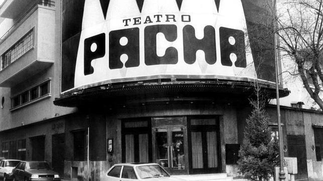

Barceló
Antiguamente conocido como Pachá Madrid, el Teatro Barcelo situado en pleno centro de Madrid se ha convertido en un referente nacional en cuanto a su calidad. Pese a que no es uno de los mas baratos de la capital merece la pena ir por su musica y su increible pista de baile!

Información relevante:
- Precio de entrada: 20-25€ (€€)
- Calidad-precio: 3/5
- Ubicacion: